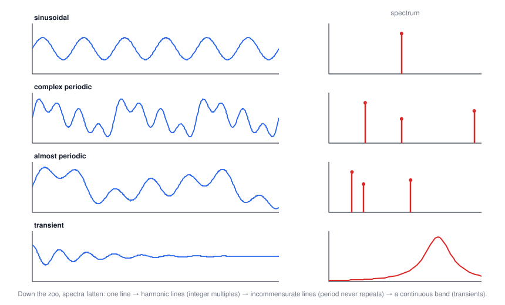
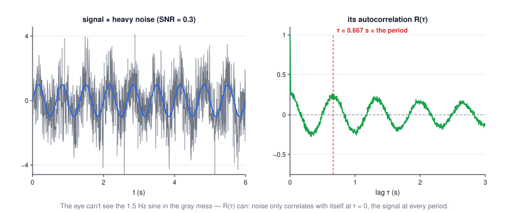
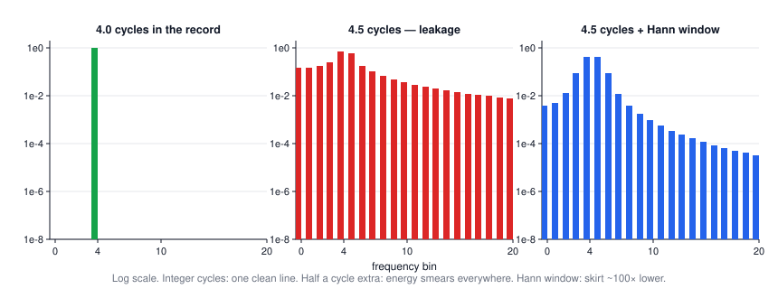

Lecture 10: Spectral Analysis & Time Series
CSE 276C, Lecture 10 · spectral handout (A. Lagg, MPS) · Numerical Recipes ch. 12–13. All numbers verified in
scripts/lec10/verify.py.The big picture
Everything a robot measures arrives as numbers-over-time. Lectures 2–8 mostly treated samples as a cloud; this lecture treats the ordering as the information. One mental picture carries the whole handout: time domain and frequency domain are two views of the same data, connected by the Fourier transform, and correlation functions are the bridge (PSD = Fourier transform of the autocorrelation).
| robotics problem | what you compute | section |
|---|---|---|
| is this vibration the motor (120 Hz) or the propeller (47 Hz)? | power spectral density | 4 |
| sonar / UWB ranging: when did the echo come back? | cross-correlation peak | 5 |
| how fast must I sample my IMU? | Nyquist: \(f_s > 2 f_{max}\), filter first | 6 |
| de-noise / de-blur a sensor stream | FFT filtering, Wiener | 8 |
| gait events in a legged robot (when, not just what frequency) | STFT / wavelets | 10 |
1 · The signal zoo
The handout's taxonomy, worth internalizing because each class has a different spectrum:
| class | example | spectrum |
|---|---|---|
| sinusoidal | \(x = X\sin(2\pi f_0 t + \theta)\) | one line at f₀ |
| complex periodic | \(x(t) = x(t \pm nT)\): Fourier series \(\tfrac{a_0}{2} + \sum a_n\cos 2\pi n f_1 t + b_n \sin 2\pi n f_1 t\) | lines at integer multiples of f₁ = 1/T |
| almost periodic | \(\sin 2t + \sin 3t + \sin\sqrt{50}\,t\) — no common divisor | lines at incommensurate frequencies; never exactly repeats |
| transient | decaying exponentials, a single pulse | continuous spectrum |
| random | sensor noise | continuous; described statistically (stationary? ergodic?) |

Stationary = the statistics don't drift with time; ergodic = one long recording tells you what an ensemble of recordings would (so time averages work). The handout assumes both from here on — and so does every practical PSD you'll ever compute.
2 · Describing a random signal
$$\mu_x = \lim_{T\to\infty}\tfrac1T\!\int_0^T\! x\,dt,\qquad \Psi_x^2 = \lim_{T\to\infty}\tfrac1T\!\int_0^T\! x^2 dt,\qquad \sigma_x^2 = \Psi_x^2 - \mu_x^2$$| symbol | meaning |
|---|---|
| \(\mu_x\) | mean — the static component (a biased gyro's offset) |
| \(\Psi_x^2\), rms = \(\sqrt{\Psi_x^2}\) | mean square — total intensity, DC included |
| \(\sigma_x^2\) | variance — the dynamic component. For a pure sine of amplitude A: \(\Psi^2 = A^2/2\) (verified: 0.8² / 2 = 0.32) |
| \(p(x)\) | probability density — fraction of time spent near each value. A sine's pdf is a bathtub (it lingers at the extremes); noise is a bell. |
3 · Autocorrelation: does the signal remember itself?
$$R_x(\tau) = \lim_{T\to\infty}\frac1T\int_0^T x(t)\,x(t+\tau)\,dt$$Multiply the signal by a shifted copy of itself and average: large when the signal at time t predicts the signal at time t + τ. Two gifts: \(\Psi_x^2 = R_x(0)\) and \(\mu_x = \sqrt{R_x(\infty)}\) (noise decorrelates; only the DC part survives at large lag).
Worked example: the rectangular pulse (click to open)
A pulse of height A = 1.5 and width θ = 2 slid across itself overlaps over a window that shrinks linearly with |τ|: \(R(\tau) = A^2\theta\,(1 - |\tau|/\theta)\) for |τ| < θ — a triangle. Verified numerically: R(0) = 4.5 = A²θ ✓, R(1) = 2.25 ✓, R(1.9) = 0.225 ✓. A box correlated with itself is a triangle — remember this; it's also why box-filtering twice gives triangular (linear) smoothing.

4 · Power spectral density
$$G_x(f) = 2\int_{-\infty}^{\infty} R_x(\tau)\, e^{-i 2\pi f \tau}\, d\tau$$The PSD is the Fourier transform of the autocorrelation. It answers "how much mean-square power lives near frequency f": a sine gives a delta spike, narrowband noise a hump, white noise a flat line. In practice you estimate it from the FFT directly — the periodogram \(P(f_k) = \frac{1}{N^2}\big(|C_k|^2 + |C_{N-k}|^2\big)\).
5 · Cross-correlation: find the echo
$$R_{xy}(\tau) = \lim_{T\to\infty}\frac1T\int_0^T x(t)\,y(t+\tau)\,dt, \qquad R_{xy}(l) = \frac{\sum_k (x_k - \bar x)(y_{k+l} - \bar y)} {\sqrt{\sum (x_k-\bar x)^2 \sum (y_k - \bar y)^2}}$$Same idea between two signals: slide y over x and score the match at every lag. The peak's location is the time delay (ranging!); its height says whether y contains x at all (matched detection). Verified: a bump pair delayed 4.00 s with noise at SNR ≈ 2.5 is recovered at lag 3.94 s — the handout's own example recovers 4.02.
🕹️ Try it: slide the received trace by hand, then let the correlogram do all lags at once. Preset 2 buries the echo in noise; preset 3 shows what "no relationship" looks like.
6 · Sampling, Nyquist, aliasing
$$f_c = \frac{1}{2h} \quad\text{(Nyquist / folding frequency, sample spacing } h\text{)}$$A sampled sine at frequency f is bit-for-bit identical to one at every frequency that folds onto f across multiples of f_s. Verified: 7 Hz sampled at 10 Hz matches a (phase-flipped) 3 Hz sine at every sample to 10⁻¹⁴, and its DFT peak sits at 3 Hz. Once sampled, the impostor cannot be detected — which is why the anti-aliasing filter must act before the ADC.
7 · Fourier series & the DFT
Any periodic signal is a recipe of harmonics; the coefficients are inner products (orthogonality doing the work, as in Lecture 4's Chebyshev sums):
$$a_q = \frac2T\int_0^T x(t)\cos 2\pi q f_1 t\, dt, \qquad b_q = \frac2T\int_0^T x(t)\sin 2\pi q f_1 t\, dt$$Sampled at N points the integrals become the sums \(A_q = \frac2N\sum_n x_n \cos\frac{2\pi q n}{N}\) etc. (verified to machine precision on a synthetic signal: A₀ = mean, A₂ = 3, B₃ = 1.5, A₃ = 0). Computing all of them naively is O(N²) — "inefficient & slow", says the handout — the FFT gets O(N log N) and is the reason this whole toolbox is cheap.
🕹️ Try it: rebuild a bang-bang command from sines and watch the Gibbs horns refuse to die:
Verified coefficient laws: square wave \(b_q = 4/\pi q\) (odd q) — rms error still 0.09 after 49 terms; a triangle's \(1/q^2\) coefficients reach rms 0.001 with 40. Smoothness in time = decay in frequency.
8 · Convolution, deconvolution, Wiener
$$r * s \;\overset{FT}{\Longleftrightarrow}\; R(f)\,S(f), \qquad \text{Corr}(g,h) \;\overset{FT}{\Longleftrightarrow}\; G(f)\,H^*(f), \qquad \text{Corr}(g,g) \;\overset{FT}{\Longleftrightarrow}\; |G(f)|^2$$| theorem | what it buys a robot |
|---|---|
| convolution | filtering = multiply spectra; fast convolution via FFT (zero-pad to kill wrap-around end effects) |
| correlation | the delay-finder of §5 at FFT speed — real-time sonar |
| autocorrelation ↔ |G|² | the PSD, again — the whole toolkit is one transform |
Deconvolution (undo a sensor's smearing): divide spectra, \( \tilde U = C/R\). With noise this explodes — dividing by tiny |R(f)| amplifies noise at exactly the frequencies where you know least. The Wiener filter fixes it by weighting each frequency by its signal-to-noise:
$$\tilde U(f) = \frac{C(f)}{R(f)}\,\Phi(f), \qquad \Phi(f) = \frac{|S(f)|^2}{|S(f)|^2 + |N(f)|^2}$$Measured on a synthetic blur-plus-noise problem: naive inverse MSE ≈ 10¹¹ (pure noise amplification); Wiener MSE 0.006. Not a typo — eleven orders of magnitude.
9 · Leakage & windowing
The FFT silently assumes your record repeats end-to-end. If the record holds a non-integer number of cycles, the artificial seam acts like a discontinuity and smears energy across all bins. Verified: 4.0 cycles in a 256-sample record put 100% of the energy in bin 4; 4.5 cycles leave only 0.67 in the biggest bin and still 0.016 ten bins away. Multiplying the record by a window (Hann \(= \cos^2\), Hamming, Blackman, Gaussian…) that fades the ends to zero cuts that far-away skirt ~100× — at the price of a slightly wider main peak.

10 · Beyond Fourier: STFT & wavelets
A Fourier magnitude spectrum says what frequencies occurred but not when — the handout's demo: 6→4→2→1 Hz played in sequence has nearly the same spectrum as all four at once. Fixes:
- STFT: FFT a sliding window → a spectrogram (time × frequency). One fixed trade-off: narrow window = good time / bad frequency resolution, wide = the reverse (Δf·Δt = const — the Heisenberg box).
- Wavelets (CWT): correlate with stretched/compressed copies of a short "mother wavelet" (Mexican hat, Morlet): \( \Psi(\tau, s) = \frac{1}{\sqrt{|s|}}\int x(t)\,\psi^*\!\big(\tfrac{t-\tau}{s}\big)dt\). Scale replaces frequency, and the resolution adapts: fine time resolution for fast transients, fine frequency resolution for slow drifts — exactly the mix a contact event in a force signal wants. The DWT discretizes scales into an orthonormal, fast transform.
11 · Summary
- Classify first: periodic → line spectra; transients/random → continuous spectra; stationary + ergodic is the license for everything practical.
- R(τ) finds self-similarity (period extraction from noise); R_xy(τ) finds delays (ranging) and detections.
- PSD = FT of autocorrelation = |FFT|² (periodogram): the frequency budget of the signal.
- Sample above 2f_max and low-pass before the ADC — after sampling, aliases are undetectable.
- The FFT's assumptions bite: detrend, regularize the grid, window the record.
- Deconvolve with Wiener's SNR weighting, never by bare spectral division.
- When timing matters, trade Fourier's global view for STFT (fixed tiles) or wavelets (adaptive tiles).
| tool | one-line idea | use it when |
|---|---|---|
| autocorrelation | signal × shifted self | find periodicity, estimate μ and Ψ² |
| cross-correlation | signal × shifted other | delays, echoes, template detection |
| FFT / periodogram | sort energy by frequency | vibration ID, filtering, fast convolution |
| Wiener filter | divide spectra, weighted by SNR | de-blur / de-noise with a known response |
| window functions | fade the record's ends | any finite record whose tones aren't bin-aligned |
| STFT / wavelets | localized transforms | when when matters, not just what |
⚠️ Typos in the slides to watch out for
- Mean-square-values slide: "rout mean square value" → root mean square.
- Transient-data slide, rectangular pulse: the zero branch condition is printed "c < t < 0" — should be t < 0 or t > c (as printed it's an empty set).
- Irregular-grid slide: "inear interpolation between y_k and y_{k+1}" → linear.
- Noise-removal slides: "transorm back to time domain" → transform; "Fourier Transorm on irregular gridded data" → Transform.
- Literature slide: "Numerical Recipies" → Recipes.
- Wavelet slides: "continous wavelet transform" → continuous; "'let'" derivation on the mother-wavelet slide maps "compactly supported" to -let ("small"), i.e. small wave — the slide's quote marks garble it.
- Hann window formula appears as \(w(t) = \cos^2(\pi t/2)\) on t ∈ [−1,1] — fine, but note the Hamming formula beside it, \(0.54 + 0.46\cos(\pi t)\), uses the same convention; on sample index n ∈ [0, N) both become the familiar \(0.5 - 0.5\cos(2\pi n/N)\) / \(0.54 - 0.46\cos(2\pi n/N)\). Mixing the two conventions is the classic off-by-half-period bug.